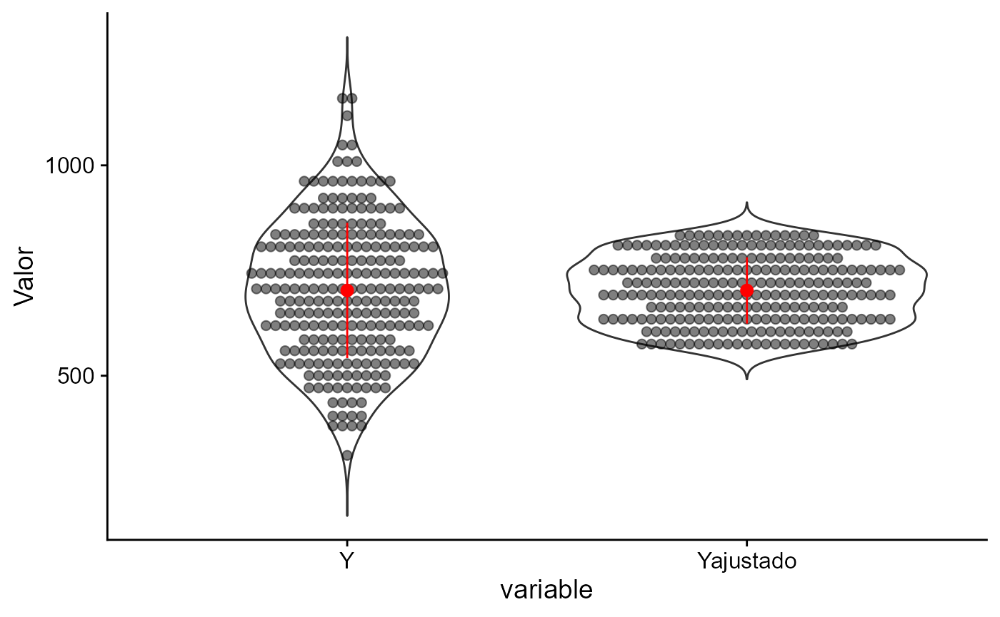
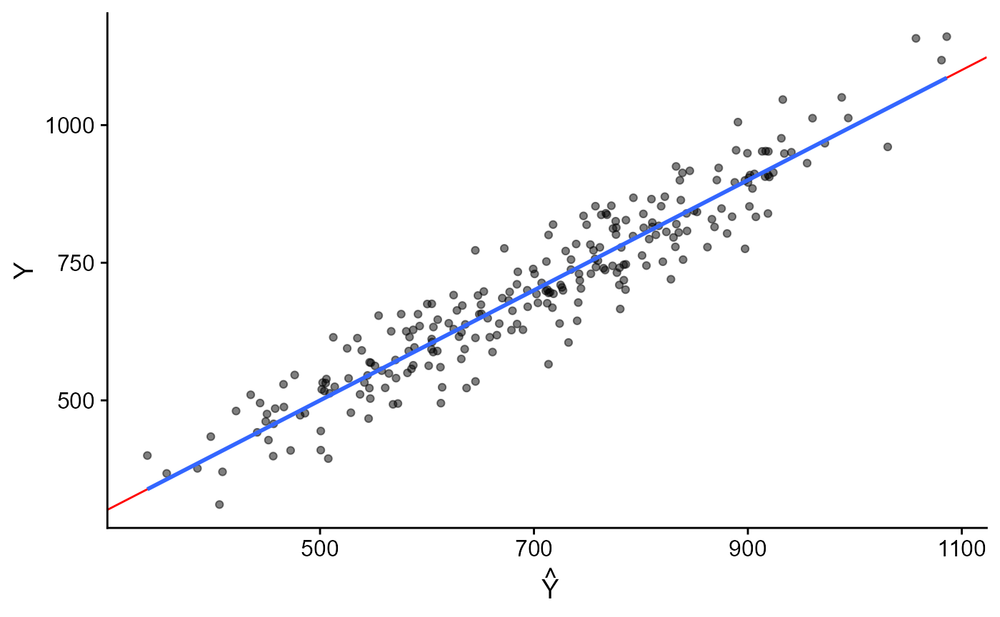
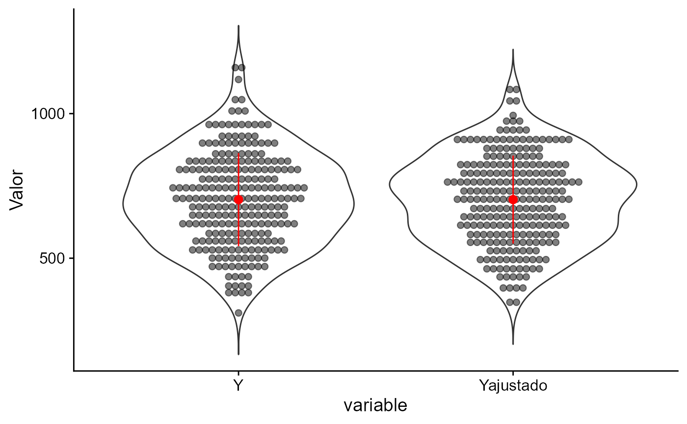

appraiseR
Engenharia de Avaliações no
Luiz Fernando Palin Droubi
Norberto Hochheim
Source:vignettes/index/index.Rmd
index.RmdIntrodução
- appraiseR (https://lfpdroubi.github.io/appraiseR/) é um pacote de software livre para utilização:
- no ensino da Engenharia de Avaliações
- na pesquisa de melhores práticas e novos métodos para Avaliação de Bens
- na prática da Engenharia de Avaliações (sem garantias)
- Por que ?
- é uma linguagem de programação feita por estatísticos
- é uma linguagem de programação feita para estatísticos
- Milhares de pacotes de software com métodos estatísticos já programados
- Excelentes recursos para construção de gráficos
- Desenvolvimento comunitário: Free software
- fortemente baseado na NBR 14.653-2 (ABNT 2011)
- implementa também alguns parâmetros da IAAO (IAAO 2013)
- pretende integrar a comunidade de Engenheiros Avaliadores na pesquisa e divulgação de dados e análise de dados para a Engenharia de Avaliações
- Existem diversos pacotes no para baixar dados de APIs
- Por que não uma API para dados públicos de transações de imóveis?
Conjuntos de dados disponíveis
- Estão disponíveis vários conjuntos de dados que podem ser utilizados tanto para os testes das diversas funções do pacote, assim como testes de novos métodos estatísticos.
- P. Ex: Hochheim (2015)
Análise exploratória de dados
Gráficos na escala original
dados <- st_drop_geometry(centro_2015) plotdf(valor~., dados)
Gráficos das variáveis independentes contra a variável dependente.
Escolha de modelos
## Call:
## bestfit(formula = valor ~ ., data = dados)
##
## Best (Chosen) Transformations:
## id valor area_total quartos suites garagens dist_b_mar adj_R2
## 443 1 rsqrt sqrt rsqrt identity sqrt rsqrt 0.9480455
##
## Best (Chosen) fit LM summary:
## Estimate Std. Error t value Pr(>|t|) signif
## (Intercept) 1.779739e-03 1.300916e-04 13.680661 < 2.22e-16 ***
## sqrt(area_total) -2.279141e-05 5.294949e-06 -4.304368 9.8149e-05 ***
## rsqrt(quartos) 6.560855e-04 1.269215e-04 5.169224 6.1355e-06 ***
## identity(suites) -4.239837e-05 2.060428e-05 -2.057746 0.045856 ***
## sqrt(garagens) -2.711343e-04 4.426511e-05 -6.125237 2.6230e-07 ***
## rsqrt(dist_b_mar) -2.628043e-03 5.099035e-04 -5.154001 6.4481e-06 ***
## padraomedio -2.214315e-04 4.586045e-05 -4.828376 1.8549e-05 ***
## padraoalto -2.576482e-04 4.605034e-05 -5.594925 1.5162e-06 ***
## ---
## Signif. codes: 0 ‘***’ 0.10 ‘**’ 0.20 ‘*’ 0.30 ‘ ’ 1
## NBR-14.653-2 check:
## Number of market data used:
## [1] "n = 50 >= 42 --> Grau III"
## Max significance level allowed for each predictor:
## [1] "t máximo = 4.59 % < 10% --> Grau III"
## Max significance level allowed for F-test:
## [1] "p-valor F = 2.79e-24 % < 1% --> Grau III"Restringindo a busca
library(car) fit <- lm(valor ~ area_total + quartos + suites + garagens + dist_b_mar + padrao, data = dados) s <- summary(fit) boxCox(fit)
Perfil da Log-Verossimilhança do parâmetro \(\lambda\) da família de Box-Cox
Restringindo a busca
boxTidwell(log(valor) ~ area_total + quartos + dist_b_mar, other.x = ~padrao + suites + garagens, data = dados)
## MLE of lambda Score Statistic (z) Pr(>|z|)
## area_total 1.02737 -0.2551 0.79865
## quartos 0.45827 -0.3290 0.74217
## dist_b_mar -0.56841 2.2019 0.02767 *
## ---
## Signif. codes: 0 '***' 0.001 '**' 0.01 '*' 0.05 '.' 0.1 ' ' 1
##
## iterations = 9logs <- fits$tab[which(fits$tab$valor == "log"), ] logs
| id | valor | area_total | quartos | suites | garagens | dist_b_mar | adj_R2 | |
|---|---|---|---|---|---|---|---|---|
| 335 | 32 | log | identity | sqrt | identity | sqrt | rsqrt | 0.9425135 |
| 327 | 34 | log | identity | log | identity | sqrt | rsqrt | 0.9422108 |
| 323 | 37 | log | identity | identity | identity | sqrt | rsqrt | 0.9420366 |
| 331 | 42 | log | identity | rsqrt | identity | sqrt | rsqrt | 0.9412708 |
| 334 | 52 | log | identity | sqrt | identity | sqrt | log | 0.9402942 |
| 322 | 55 | log | identity | identity | identity | sqrt | log | 0.9399696 |
| 326 | 58 | log | identity | log | identity | sqrt | log | 0.9398457 |
| 383 | 66 | log | sqrt | sqrt | identity | sqrt | rsqrt | 0.9394393 |
| 371 | 67 | log | sqrt | identity | identity | sqrt | rsqrt | 0.9394134 |
Detalhe do modelo escolhido
summary(fits, fit = 37)
## Call:
## bestfit(formula = valor ~ ., data = dados)
##
## Best (Chosen) Transformations:
## id valor area_total quartos suites garagens dist_b_mar adj_R2
## 323 37 log identity identity identity sqrt rsqrt 0.9420366
##
## Best (Chosen) fit LM summary:
## Estimate Std. Error t value Pr(>|t|) signif
## (Intercept) 11.756192811 0.1015939257 115.717478 < 2.22e-16 ***
## identity(area_total) 0.001822593 0.0002851187 6.392401 1.0822e-07 ***
## identity(quartos) 0.149739594 0.0403838313 3.707910 0.00060639 ***
## identity(suites) 0.106994989 0.0364186250 2.937920 0.00534621 ***
## sqrt(garagens) 0.431526589 0.0779549769 5.535587 1.8438e-06 ***
## rsqrt(dist_b_mar) 4.162655404 0.9176505268 4.536210 4.7255e-05 ***
## padraomedio 0.223470855 0.0817483381 2.733644 0.00912915 ***
## padraoalto 0.271921245 0.0824023231 3.299922 0.00197771 ***
## ---
## Signif. codes: 0 ‘***’ 0.10 ‘**’ 0.20 ‘*’ 0.30 ‘ ’ 1
## NBR-14.653-2 check:
## Number of market data used:
## [1] "n = 50 >= 42 --> Grau III"
## Max significance level allowed for each predictor:
## [1] "t máximo = 0.91 % < 10% --> Grau III"
## Max significance level allowed for F-test:
## [1] "p-valor F = 2.74e-23 % < 1% --> Grau III"Testes dos modelos
Normalidade
KS(fit)
##
## One-sample Kolmogorov-Smirnov test
##
## data: rstandard(fit)
## D = 0.10197, p-value = 0.6387
## alternative hypothesis: two-sidedECDF.
Plotagem de modelos
Predição de valores
predict(fits, fit = 37, interval = "confidence", level = .80, newdata = data.frame(area_total = 205, quartos = 3, suites = 1, garagens = 2, dist_b_mar = 250, padrao = "medio"))
## Predictions:
## fit lwr upr AMP G.P. C.A.I. C.A.S. L.I. L.S.
## 1 968059.9 919199.5 1019517 10.36 III 822850.9 1113269 919199.5 1019517predict(fits, fit = 37, interval = "prediction", level = .80, newdata = data.frame(area_total = 205, quartos = 3, suites = 1, garagens = 2, dist_b_mar = 250, padrao = "medio"))
## Predictions:
## fit lwr upr AMP G.P. C.A.I. C.A.S. L.I. L.S.
## 1 968059.9 791164.5 1184507 40.63 I 822850.9 1113269 822850.9 1113269
Poder de Predição (3)
powerPlot(fit, axis = "inverted", func = "log")
Poder de Predição na escala original.
Performance da avaliação em massa
Estatísticas
iaao_Ratio(fit, func = "log")
## Razão das medianas (Median Ratio) = 1,022
## Nível: Valor Venal SUPERIOR ao valor de mercado:
## necessidade de atualização dos valores venais.
##
## COD (Coefficient of Dispersion) = 10,18%
## Nível: Equidade de Valor Venal BOA (COD entre 11% e 14%)
##
## PRD (Price-Related Differential) = 101,91%
## Nível: Tendência REGRESSIVA de Valor Venal
## DENTRO do intervalo recomendado (98% a 103%)
##
## PRB (Price-Related Bias) = -0,016
## Intervalo de Confiança: -0,061 0,028Simulações de dados
Modelo Nulo
fit <- lm(VU ~ 1, amostra) # Resíduos vs. valores ajustados plot(fit, which = 1) #Resíduos vs. valores observados plot(amostra$VU, residuals(fit)) abline(a = 0, b = 0, col = "grey", lty = 2)
Resíduos vs. valores ajustados e observados.
Encolhimento com modelo pobre
shrinkPlot(fit1)

Encolhimento dos valores ajustados. Modelo Pobre.
Poder de Predição com modelo completo

Poder de Predição. Modelo Completo.
- Mesmo com modelo completo ainda subsiste uma leve inclinação (em relação à diagonal) no 1º gráfico.
Encolhimento com modelo completo
shrinkPlot(fit3)

Encolhimento. Modelo Completo.
- Nota-se ainda algum encolhimento, ainda que pequeno.
Referências
ABNT. 2011. NBR 14653-2: Avaliação de Bens – Parte 2: Imóveis Urbanos. Rio de Janeiro: Associação Brasileira de Normas Técnicas.
Hochheim, Norberto. 2015. Engenharia de Avaliações - Módulo Básico. Florianópolis: IBAPE - SC.
IAAO. 2013. Standards on Ratio Studies. Kansas City, Missouri: International Association of Assessing Officers.